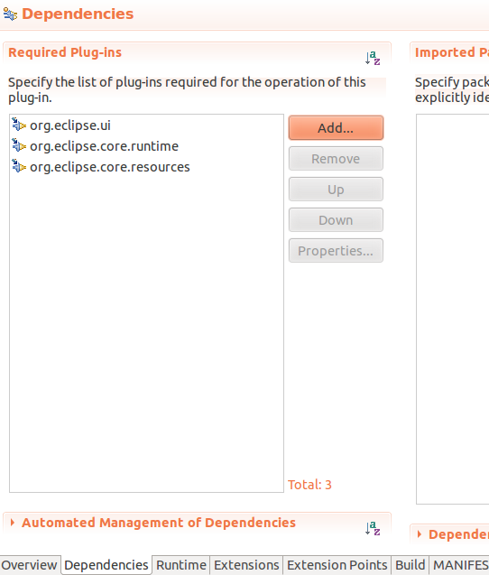
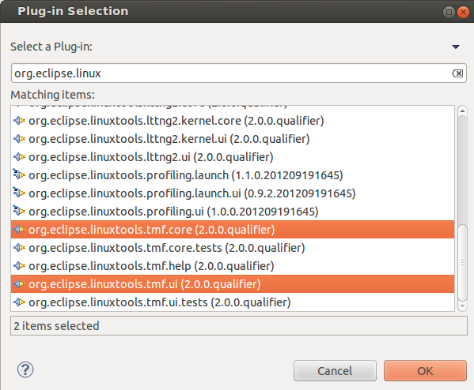
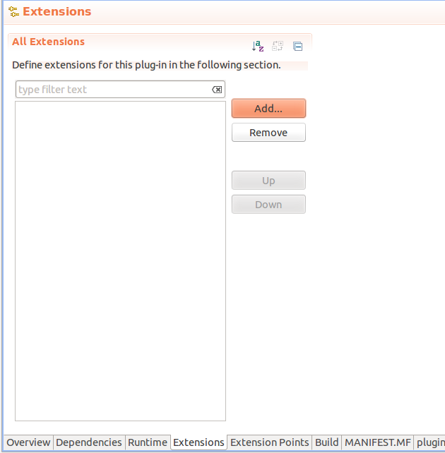
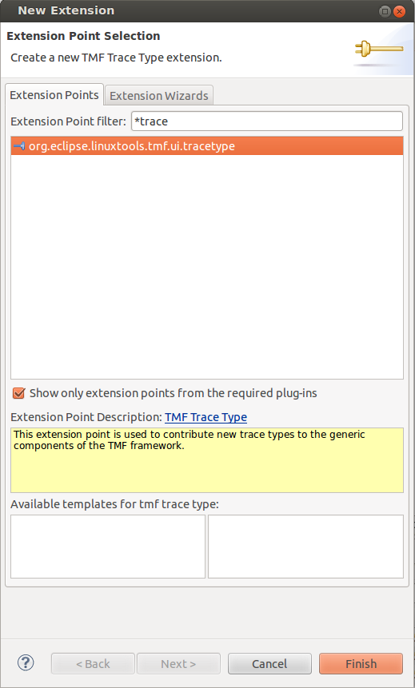
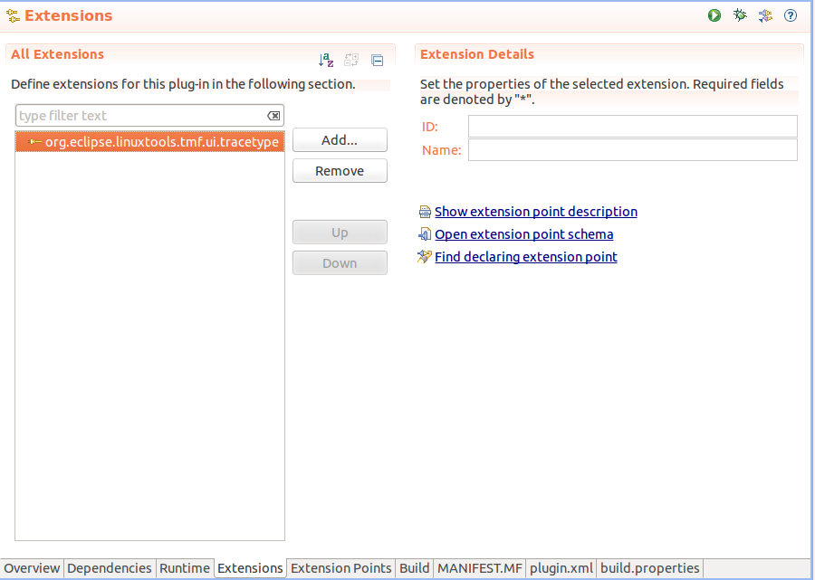
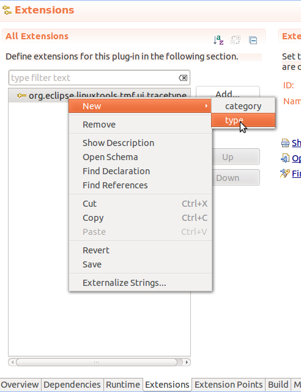
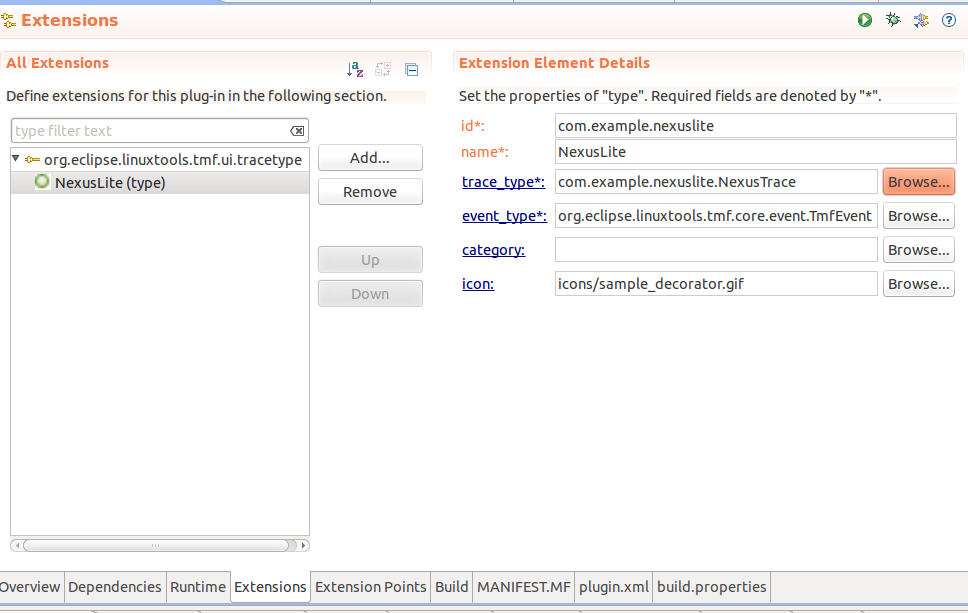

| Implementing a New Trace Type | ||
|---|---|---|
|
|
|
|
| Introduction | View Tutorial | |
The framework can easily be extended to support more trace types. To make a new trace type, one must define the following items:
The event type must implement an ITmfEvent or extend a class that implements an ITmfEvent. Typically it will extend TmfEvent. The event type must contain all the data of an event. The trace reader must be of an ITmfTrace type. The TmfTrace class will supply many background operations so that the reader only needs to implement certain functions. The trace context can be seen as the internals of an iterator. It is required by the trace reader to parse events as it iterates the trace and to keep track of its rank and location. It can have a timestamp, a rank, a file position, or any other element, it should be considered to be ephemeral. The trace location is an element that is cloned often to store checkpoints, it is generally persistent. It is used to rebuild a context, therefore, it needs to contain enough information to unambiguously point to one and only one event. Finally the tracetype plug-in extension associates a given trace, non-programmatically to a trace type for use in the UI.
This is a very small subset of the nexus trace format, with some changes to make it easier to read. There is one file. This file starts with 64 Strings containing the event names, then an arbitrarily large number of events. The events are each 64 bits long. the first 32 are the timestamp in microseconds, the second 32 are split into 6 bits for the event type, and 26 for the data payload.
The trace type will be made of two parts, part 1 is the event description, it is just 64 strings, comma seperated and then a line feed.
Startup,Stop,Load,Add, ... ,reserved\n
Then there will be the events in this format
| timestamp (32 bits) | type (6 bits) | payload (26 bits) |
| 64 bits total | ||
all events will be the same size (64 bits).
Create a New, Project..., Plug-in Project, set the title to com.example.nexuslite, click Next > then click on Finish.
Now the structure for the Nexus trace Plug-in is set up.
Add a dependency to TMF core and UI by opening the MANIFEST.MF in META-INF, selecting the Dependencies tab and Add ... org.eclipse.linuxtools.tmf.core and org.eclipse.linuxtools.tmf.ui.


Now the project can access TMF classes.
The TmfEvent class will work for this example. No code required.
The trace reader will extend a TmfTrace class.
It will need to implement:
Here is an example implementation of the Nexus Trace file
/*******************************************************************************
* Copyright (c) 2013 Ericsson
*
* All rights reserved. This program and the accompanying materials are
* made available under the terms of the Eclipse Public License v1.0 which
* accompanies this distribution, and is available at
* http://www.eclipse.org/legal/epl-v10.html
*
* Contributors:
* Matthew Khouzam - Initial API and implementation
*******************************************************************************/
package com.example.nexuslite;
import java.io.BufferedReader;
import java.io.File;
import java.io.FileInputStream;
import java.io.FileNotFoundException;
import java.io.FileReader;
import java.io.IOException;
import java.nio.MappedByteBuffer;
import java.nio.channels.FileChannel;
import java.nio.channels.FileChannel.MapMode;
import org.eclipse.core.resources.IProject;
import org.eclipse.core.resources.IResource;
import org.eclipse.core.runtime.IStatus;
import org.eclipse.core.runtime.Status;
import org.eclipse.linuxtools.tmf.core.event.ITmfEvent;
import org.eclipse.linuxtools.tmf.core.event.ITmfEventField;
import org.eclipse.linuxtools.tmf.core.event.TmfEvent;
import org.eclipse.linuxtools.tmf.core.event.TmfEventField;
import org.eclipse.linuxtools.tmf.core.event.TmfEventType;
import org.eclipse.linuxtools.tmf.core.exceptions.TmfTraceException;
import org.eclipse.linuxtools.tmf.core.timestamp.ITmfTimestamp;
import org.eclipse.linuxtools.tmf.core.timestamp.TmfTimestamp;
import org.eclipse.linuxtools.tmf.core.trace.ITmfContext;
import org.eclipse.linuxtools.tmf.core.trace.ITmfEventParser;
import org.eclipse.linuxtools.tmf.core.trace.ITmfLocation;
import org.eclipse.linuxtools.tmf.core.trace.TmfContext;
import org.eclipse.linuxtools.tmf.core.trace.TmfLongLocation;
import org.eclipse.linuxtools.tmf.core.trace.TmfTrace;
/**
* Nexus trace type
*
* @author Matthew Khouzam
*/
public class NexusTrace extends TmfTrace implements ITmfEventParser {
private static final int CHUNK_SIZE = 65536; // seems fast on MY system
private static final int EVENT_SIZE = 8; // according to spec
private TmfLongLocation fCurrentLocation;
private static final TmfLongLocation NULLLOCATION = new TmfLongLocation(
(Long) null);
private static final TmfContext NULLCONTEXT = new TmfContext(NULLLOCATION,
-1L);
private long fSize;
private long fOffset;
private File fFile;
private String[] fEventTypes;
private FileChannel fFileChannel;
private MappedByteBuffer fMappedByteBuffer;
@Override
public IStatus validate(@SuppressWarnings("unused") IProject project,
String path) {
File f = new File(path);
if (!f.exists()) {
return new Status(IStatus.ERROR, Activator.PLUGIN_ID,
"File does not exist"); //$NON-NLS-1$
}
if (!f.isFile()) {
return new Status(IStatus.ERROR, Activator.PLUGIN_ID, path
+ " is not a file"); //$NON-NLS-1$
}
String header = readHeader(f);
if (header.split(",", 64).length == 64) { //$NON-NLS-1$
return Status.OK_STATUS;
}
return new Status(IStatus.ERROR, Activator.PLUGIN_ID,
"File does not start as a CSV"); //$NON-NLS-1$
}
@Override
public ITmfLocation getCurrentLocation() {
return fCurrentLocation;
}
@Override
public void initTrace(IResource resource, String path,
Class<? extends ITmfEvent> type) throws TmfTraceException {
super.initTrace(resource, path, type);
fFile = new File(path);
fSize = fFile.length();
if (fSize == 0) {
throw new TmfTraceException("file is empty"); //$NON-NLS-1$
}
String header = readHeader(fFile);
if (header == null) {
throw new TmfTraceException("File does not start as a CSV"); //$NON-NLS-1$
}
fEventTypes = header.split(",", 64); // 64 values of types according to //$NON-NLS-1$
// the 'spec'
if (fEventTypes.length != 64) {
throw new TmfTraceException(
"Trace header does not contain 64 event names"); //$NON-NLS-1$
}
if (getNbEvents() < 1) {
throw new TmfTraceException("Trace does not have any events"); //$NON-NLS-1$
}
try {
fFileChannel = new FileInputStream(fFile).getChannel();
seek(0);
} catch (FileNotFoundException e) {
throw new TmfTraceException(e.getMessage());
} catch (IOException e) {
throw new TmfTraceException(e.getMessage());
}
}
/**
* @return
*/
private String readHeader(File file) {
String header = new String();
BufferedReader br;
try {
br = new BufferedReader(new FileReader(file));
header = br.readLine();
br.close();
} catch (IOException e) {
return null;
}
fOffset = header.length() + 1;
setNbEvents((fSize - fOffset) / EVENT_SIZE);
return header;
}
@Override
public double getLocationRatio(ITmfLocation location) {
return ((TmfLongLocation) location).getLocationInfo().doubleValue()
/ getNbEvents();
}
@Override
public ITmfContext seekEvent(ITmfLocation location) {
TmfLongLocation nl = (TmfLongLocation) location;
if (location == null) {
nl = new TmfLongLocation(0L);
}
try {
seek(nl.getLocationInfo());
} catch (IOException e) {
return NULLCONTEXT;
}
return new TmfContext(nl, nl.getLocationInfo());
}
@Override
public ITmfContext seekEvent(double ratio) {
long rank = (long) (ratio * getNbEvents());
try {
seek(rank);
} catch (IOException e) {
return NULLCONTEXT;
}
return new TmfContext(new TmfLongLocation(rank), rank);
}
private void seek(long rank) throws IOException {
final long position = fOffset + (rank * EVENT_SIZE);
int size = Math.min((int) (fFileChannel.size() - position), CHUNK_SIZE);
fMappedByteBuffer = fFileChannel.map(MapMode.READ_ONLY, position, size);
}
@Override
public ITmfEvent parseEvent(ITmfContext context) {
if ((context == null) || (context.getRank() == -1)) {
return null;
}
TmfEvent event = null;
long ts = -1;
int type = -1;
int payload = -1;
long pos = context.getRank();
if (pos < getNbEvents()) {
try {
// if we are approaching the limit size, move to a new window
if ((fMappedByteBuffer.position() + EVENT_SIZE) > fMappedByteBuffer
.limit()) {
seek(context.getRank());
}
/*
* the trace format, is:
*
* - 32 bits for the time,
* - 6 for the event type,
* - 26 for the data.
*
* all the 0x00 stuff are masks.
*/
/*
* it may be interesting to assume if the ts goes back in time,
* it actually is rolling over we would need to keep the
* previous timestamp for that, keep the high bits and increment
* them if the next int ts read is lesser than the previous one
*/
ts = 0x00000000ffffffffL & fMappedByteBuffer.getInt();
long data = 0x00000000ffffffffL & fMappedByteBuffer.getInt();
type = (int) (data >> 26) & (0x03f); // first 6 bits
payload = (int) (data & 0x003FFFFFFL); // last 26 bits
// the time is in microseconds.
TmfTimestamp timestamp = new TmfTimestamp(ts, ITmfTimestamp.MICROSECOND_SCALE);
final String title = fEventTypes[type];
// put the value in a field
final TmfEventField tmfEventField = new TmfEventField(
"value", payload, null); //$NON-NLS-1$
// the field must be in an array
final TmfEventField[] fields = new TmfEventField[1];
fields[0] = tmfEventField;
final TmfEventField content = new TmfEventField(
ITmfEventField.ROOT_FIELD_ID, null, fields);
// set the current location
fCurrentLocation = new TmfLongLocation(pos);
// create the event
event = new TmfEvent(this, pos, timestamp, null,
new TmfEventType(title, title, null), content, null);
} catch (IOException e) {
fCurrentLocation = new TmfLongLocation(-1L);
}
}
return event;
}
}
In this example the validate function checks if the file exists and is not a directory.
The initTrace function will read the event names, and find where the data starts. After this, the number of events is known, and since each event is 8 bytes long according to the specs, the seek is then trivial.
The seek here will just reset the reader to the right location.
The parseEvent method needs to parse and return the current event and store the current location.
The getNext method (in base class) will read the next event and update the context. It calls the parseEvent method to read the event and update the location. It does not need to be overridden and in this example it is not. The sequence of actions necessary are parse the next event from the trace, create an ITmfEvent with that data, update the current location, call updateAttributes, update the context then return the event.
The trace context will be a TmfContext
The trace location will be a long, representing the rank in the file. The TmfLongLocation will be the used, once again, no code is required.
One can implement the tracetype extension in their own plug-in. In this example, the com.example.nexuslite plug-in will be modified.
The plugin.xml file in the ui plug-in needs to be updated if one wants users to access the given event type. It can be updated in the Eclipse plug-in editor.




The id is the unique identifier used to refer to the trace.
The name is the field that shall be displayed when a trace type is selected.
The trace type is the canonical path refering to the class of the trace.
The event type is the canonical path refering to the class of the events of a given trace.
The category (optional) is the container in which this trace type will be stored.
The icon (optional) is the image to associate with that trace type.
In the end, the extension menu should look like this.

The plug-in is available here with a trace generator and a quick test case.
After defining the trace type as described in the previous chapters it is possible to define optional attributes for the trace type.
The attribute defaultEditor allows for configuring the editor to use for displaying the events. If omitted, the TmfEventsEditor is used as default. To configure an editor, first add the defaultEditor attribute to the trace type in the extension definition. This can be done by selecting the trace type in the plug-in manifest editor. Then click the right mouse button and select New -> defaultEditor in the context sensitive menu. Then select the newly added attribute. Now you can specify the editor id to use on the right side of the manifest editor. For example, this attribute could be used to implement an extension of the class org.eclipse.ui.part.MultiPageEditor. The first page could use the TmfEventsEditor' to display the events in a table as usual and other pages can display other aspects of the trace.
The attribute eventsTableType allows for configuring the events table class to use in the default events editor. If omitted, the default events table will be used. To configure a trace type specific events table, first add the eventsTableType attribute to the trace type in the extension definition. This can be done by selecting the trace type in the plug-in manifest editor. Then click the right mouse button and select New -> eventsTableType in the context sensitive menu. Then select the newly added attribute and click on class on the right side of the manifest editor. The new class wizard will open. The superclass field will be already filled with the class org.eclipse.linuxtools.tmf.ui.viewers.events.TmfEventsTable. Using this attribute a table with different columns than the default columns can be defined. See class org.eclipse.linuxtools.internal.lttng2.kernel.ui.viewers.events.Lttng2EventsTable for an example implementation.
The attribute statisticsViewerType allows for defining trace type specific statistics. If omitted, only the default statistics will be displayed in the Statistics view (part of the Tracing view category). By default this view displays the total number of events and the number of events per event type for the whole trace and for the selected time range. To configure trace type specific statistics, first add the statisticsViewerType attribute to the trace type in the extension definition. This can be done by selecting the trace type in the plug-in manifest editor. Then click the right mouse button and select New -> statisticsViewerType in the context sensitive menu. Then select the newly added attribute and click on class on the right side of the manifest editor. The new class wizard will open. The superclass field will be already filled with the class org.eclipse.linuxtools.tmf.ui.viewers.statistics.TmfStatisticsViewer. Now overwrite the relevant methods to provide the trace specific statistics. When executing the plug-in extension in Eclipse and opening the Statistics view the Statistics view will show an additional tab beside the global tab that shows the default statistics. The new tab will display the trace specific statistics provided in the TmfStatisticsViewer sub-class implementation.
|
|

|
|
| Introduction | View Tutorial |